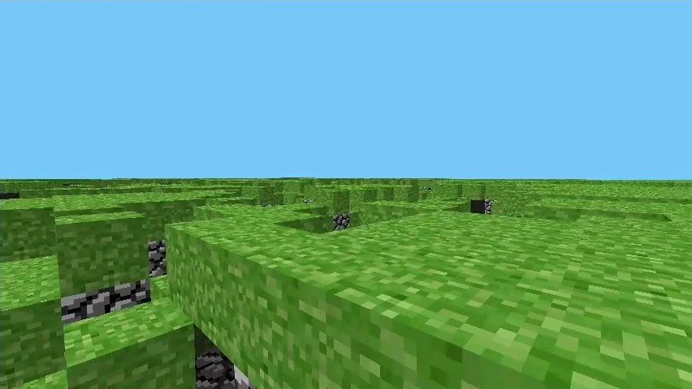

Pre-classic Pre-Classic — это название прототипных версий Minecraft (ныне Java Edition), разработанных до Classic. Это была самая первая фаза разработки игры, длившаяся менее недели; разработка началась примерно 10 или 11 мая и завершилась неделей позже, 16 мая 2009 года. На тот момент публичных версий Pre-Classic не было. Первоначальное название было "Cave Game", пока его не изменили на "Minecraft: Order of the Stone", а затем просто на "Minecraft".

Мир Pre-Classic Alpha, показанный в ходе тестирования игровых технологий Cave Game. Интересные факты Разрушение блока ничего не выпадает, так как возможность выбрасывать предметы ещё не была добавлена. При запуске доклассической версии через лаунчер , вместо заголовка окна «Minecraft» отображается просто «Игра». Название «Орден Камня» позже было повторно использовано в спин-офф игре Minecraft: Story Mode в качестве легендарной команды искателей приключений . В этой фазе Mojang ретроспективно использовала систему именования "rd- ddhhmm " , где "rd" означает RubyDung , более ранний проект Нотча, а часть ddhhmm — это метка времени, указывающая на время сборки в часовом поясе Европа/Стокгольм: dd — день месяца, hh — час, а mm — минута выпуска. Например, rd-132211 был собран 13 мая в 22:11 . Исключением из этой системы является rd-20090515 , в котором вместо этого используется полная дата в формате год-месяц-день. Все созданные доклассические версии считаются утерянными , поскольку единственные архивные файлы каждой версии были изменены 6 августа 2013 года.| Стивы взяты с маинкрафт вики | GromAlex_7, 2026 |